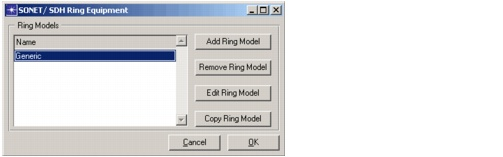
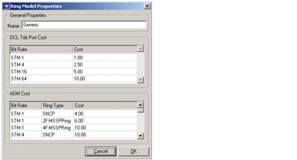
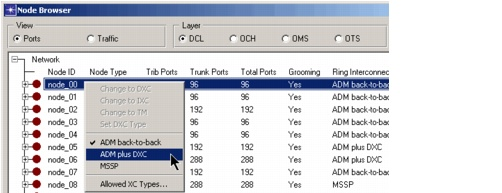

Ring Design > Pre-Design Steps
Pre-Design Steps
You must do the following steps before you design any rings:
- Create a ring model—When you add new rings, SP Guru Transport Planner uses such a ring model to determine the cost of the rings. You create a new ring model or adapt an existing one in the SONET/SDH Ring Equipment dialog box (Network > Equipment Properties > SONET/SDH Ring Equipment); see SONET/SDH Ring Equipment for more information.
Figure 12-1 Create a Ring Model

- Set the cost parameters for the ring equipment—You can specify the following parameters per ring model:
- The name of the ring model
- ADM costs per ring type (UPSR, 2F-BLSR, 4F-BLSR) and per OCH bit rate
- Costs of the tributary ports on the ADM per DCL bit rate
You specify these costs in the Ring Model Properties dialog box. To open this dialog box, click the Add Ring Model or the Edit Ring Model button in the Ring Model Properties dialog box.
Figure 12-2 Ring Model Properties Dialog Box

- Specify how you want rings to be supported at the optical layer.
If you create SONET/SDH rings between EOCC nodes, the ring links are supported by underlying OCH channels. You can use the "Support SONET/SDH Ring via Patch Panel" option to specify that these supporting channels should be switched via patch panels. If this option is not selected, the channels are supported by the standard node type in that location (such as OXC, IXC, OADM). You can set this option in the Network Properties dialog box (Network > Network Properties); as described Network Properties.
- Specify how you want to upgrade the defined rings. For each defined ring, you can set the type and bit rate of the upgraded ring to use when dimensioning for new traffic. To do this, set the Ring Design Options of the ring in the Ring Browser (described in Setting Ring Design Options.)
- For each DCL node, specify how you want to perform ring interconnection.
In the Node Browser (Network > Node Browser), right-click on a DCL node to specify how you want ring interconnection to occur at that node. The three possible architectures (ADM back-to-back, ADM plus DXC, and MSSP) are discussed in SONET Nodes: ADM.
Figure 12-3 Specifying Ring Interconnection in the DCL Node Browser

- Create the rings that are currently present in the network as well as the candidate rings to be added to the network. This step is described in the following section.
| Home © 1987-2007 OPNET Technologies, Inc. All Rights Reserved. This software may be covered by one or more U.S. Patents. See complete patent notice in the Legal Notices section. OPNET Support Center |